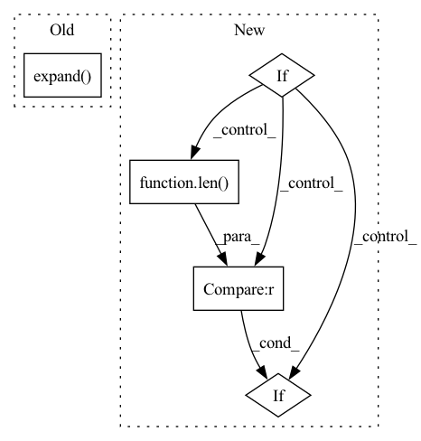

Pattern ID :32951
Before Change
embeddings = self.tgt_embed(tgt)
// Memory querying and responding for textual features
dummy_memory_matrix = memory_matrix.unsqueeze(0).expand( embeddings.size(0), memory_matrix.size(0), memory_matrix.size(1))
//dummy_memory_matrix = torch.stack([self.memory_matrix[labels[i] == 1, :] for i in range(embeddings.size(0))])
responses = self.cmn(embeddings, dummy_memory_matrix, dummy_memory_matrix)
embeddings = embeddings + responses
// Memory querying and responding for textual featuresAfter Change
for i in range(embeddings.size(0)):
query_matrix = []
for j in range(len(labels[i])):
if labels[i, j] == 1:
if j != len(labels[i])-1 :
query_matrix.extend(memory_matrix[j*self.num_prototype:(j+1)*self.num_prototype, :])
else:
query_matrix.extend(memory_matrix[j * self.num_prototype:, :])In pattern: SUPERPATTERN
Frequency: 3
Non-data size: 5
Instances Fragment ID: 95436987
Project Name: markin-wang/xpronet
Commit Name: 8a47fdb250bd2c0c90632d5faf0fa10481af5ee7
Time: 2021-11-21
Author: cserwj@gmail.com
File Name: modules/base_cmn.py
M Class Name: Transformer
N Class Name: Transformer
M Method Name: decode(8)
N Method Name: decode(7)
M Parent Class: nn.Module
N Parent Class: nn.Module
M File Name: modules/base_cmn.py
N File Name: modules/base_cmn.py
M Start Line: 74
M End Line: 79
N Start Line: 75
N End Line: 97
Before Change
// Memory querying and responding for visual features
dummy_memory_matrix = self.memory_matrix.unsqueeze(0).expand( att_feats.size(0), self.memory_matrix.size(0), self.memory_matrix.size(1))
responses = self.cmn(att_feats, dummy_memory_matrix, dummy_memory_matrix)
max_num_protype = max((labels[:,-1]*3 + labels[:,:-1].sum(-1))) * self.num_prototype
query_matrix = self.memory_matrix.new_zeros(att_feats.size(0), max_num_protype, self.memory_matrix.shape[-1])After Change
cur_query_matrix = []
//print(labels[i])
for j in range(len(labels[i])):
if labels[i, j] == 1:
if j != len(labels[i])-1 :
cur_query_matrix.extend(self.memory_matrix[j*self.num_prototype:(j+1)*self.num_prototype, :])
else:
cur_query_matrix.extend(self.memory_matrix[j * self.num_prototype:, :]) Fragment ID: 95436988
Project Name: markin-wang/xpronet
Commit Name: 947c6bd650f8ff11d6c2f9a12f79d265c1f384ce
Time: 2021-11-23
Author: cserwj@gmail.com
File Name: modules/base_cmn.py
M Class Name: BaseCMN
N Class Name: BaseCMN
M Method Name: _prepare_feature_forward(5)
N Method Name: _prepare_feature_forward(5)
M Parent Class: AttModel
N Parent Class: AttModel
M File Name: modules/base_cmn.py
N File Name: modules/base_cmn.py
M Start Line: 400
M End Line: 401
N Start Line: 404
N End Line: 422
Before Change
if num_groups is not None:
assert init_mean.shape[0] in (num_groups, 1)
init_mean = init_mean.expand(num_groups, -1)
init_cov = init_cov.expand( num_groups, -1, -1)
measure_scaling = torch.diag_embed(self._get_measure_scaling().unsqueeze(0))
init_cov = measure_scaling @ init_cov @ measure_scaling
After Change
init_cov = measure_scaling @ init_cov @ measure_scaling
// seasonal processes need to offset the initial mean:
if start_offsets is not None:
if init_mean.shape[0] == 1:
init_mean = init_mean.expand(len(start_offsets), -1)
elif init_mean.shape[0] != len(start_offsets) :
raise ValueError("Expected ``len(start_offets) == initial_state[0].shape[0]``")
init_mean_w_offset = [] Fragment ID: 95436989
Project Name: strongio/torchcast
Commit Name: 2d09dc5ccbae96aca810f788334a369574d379ae
Time: 2021-09-10
Author: jacob.dink@strong.io
File Name: torchcast/state_space/base.py
M Class Name: StateSpaceModel
N Class Name: StateSpaceModel
M Method Name: _prepare_initial_state(3)
N Method Name: _prepare_initial_state(4)
M Parent Class: nn.Module
N Parent Class: nn.Module
M File Name: torchcast/state_space/base.py
N File Name: torchcast/state_space/base.py
M Start Line: 318
M End Line: 344
N Start Line: 323
N End Line: 354